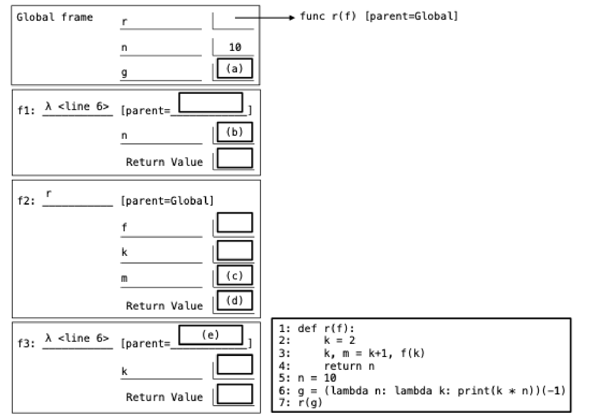

Complete the environment diagram below and then answer the questions that follow. There is one question for each labeled blank in the diagram. The blanks with no labels have no questions associated with them and are not scored. If a blank contains an arrow to a function, write the function as it would appear in the diagram.
(a) Fill in blank (a). The line number has been omitted for simplicity.
(b) Fill in blank (b).
(c) Fill in blank (c).
(d) Fill in blank (d).
(e) Fill in blank (e).
(f) What is printed by the call to print on line 6?